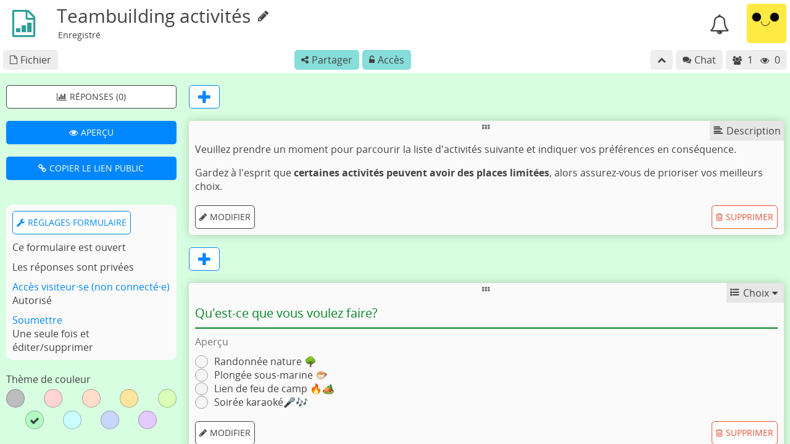
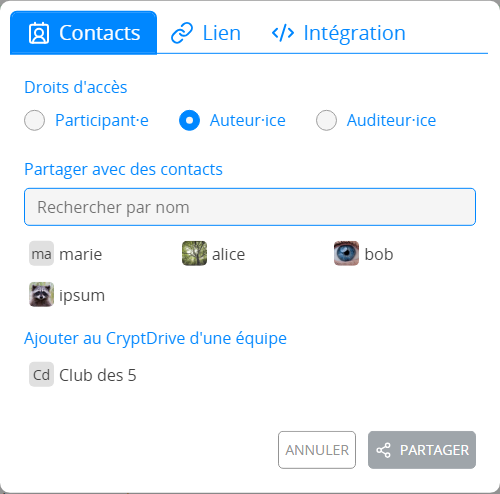

Formulaire#

Rôles#
Les formulaires bénéficient des mêmes fonctionnalités de collaboration et de confidentialité que les autres applications CryptPad. Ils présentent cependant des exigences légèrement différentes en termes d'utilisation. Par exemple, une personne répondant à un formulaire doit pouvoir modifier ses propres réponses, mais pas celles des autres utilisateur·ices ni le formulaire lui-même. Pour cette raison, les Droits d'accès lors du partage d'un formulaire sont différents des autres applications. Les formulaires ont 3 rôles différents :
Auteur·ice : peut modifier les questions et les réglages du formulaire.
Auditeur·ice : peut consulter les réponses au formulaire, qu'elles soient publiques ou non.
Participant·e : peut répondre au formulaire et voir les réponses une fois qu'elles sont rendues publiques par un·e auteur·ice.
Pour partager un formulaire avec un rôle donné, par exemple pour l'envoyer à des participant·es, sélectionnez le rôle dans le menu Partager avant de sélectionner les contacts ou de copier le lien.

Note
La liste des utilisateur·ices, le chat et les alertes concernant les utilisateur·ices qui rejoignent la session collaborative sont désactivés lorsqu'un·e participant·e répond à un formulaire. Ceci afin d'éviter de donner l'impression que quelqu'un les observe pendant qu'ils répondent.
Modifier un formulaire#
Pour ajouter une question, utilisez le menu Ajouter après la dernière question, ou le entre chaque question.
Pour supprimer une question, utilisez le bouton Supprimer sur la question à effacer.
Mise en page#
Description#
Ajoutez du texte au formulaire en utilisant la syntaxe Markdown.
Utilisateur·ices enregistré·es
Pour ajouter une image depuis le CryptDrive ou en ajouter une nouvelle, utilisez l'icône dans la barre d'outils.
Saut de page#
Diviser le formulaire en pages. Affiché uniquement pour les participants.
Section Conditionnelle#
Les questions Choix et Cases peuvent être utilisées pour afficher ou masquer une section de questions.
Dans l'éditeur, utilisez les boutons Ajouter entre les questions, ou la liste au bas du formulaire, pour ajouter une Section conditionnelle.
Vérifier qu'au moins une question Choix ou Cases est placée avant la section (un message sera affiché si ce n'es pas le cas). Seules les questions placées avant la section peuvent être utilisées dans les conditions.
Ajouter du contenu (texte de description, questions) à la section en utilisant le bouton Ajouter ou en faisant glisser les questions dans la zone de la section.
Définir certaines conditions à l'aide des menus de sélection. Les conditions ET doivent toutes être vraies ensemble, seule une des conditions OU doit être vraie.
Sur la page des participant·es, la section ne s'affiche que si les conditions sont remplies.
Types de questions#
Texte#
Réponse : une ligne de texte
Options :
Type de texte : texte, numéro, lien ou e-mail
Note
Dans le cas du lien et de l'e-mail, la question est encadrée en rouge et une erreur est affichée à l'utilisateur·ice si sa réponse ne correspond pas au format requis.
Paragraphe#
Réponse : plusieurs lignes de texte
Options :
Nombre maximum de caractères : limite (1000 par défaut)
Choix#
Réponse : un choix dans la liste
Options :
bouton Ajouter une option
Grab the handle and drag to re-order options
Supprimer une option avec
Grille de choix#
Réponse : un choix d'option par objet
Options :
boutons Ajouter une option and Ajouter un objet
Grab the handle and drag to re-order items and options
Supprimer un objet ou une option avec
Date#
Réponse : choisir une date et une heure
Cases#
Réponse : choix multiples dans la liste
Options :
Nombre maximum de réponses
bouton Ajouter une option
Grab the handle and drag to re-order options
Supprimer une option avec
Grille de cases#
Réponse : choix multiples pour chaque objet
Options :
Nombre maximum de réponses (par objet)
boutons Ajouter une option and Ajouter un objet
Grab the handle and drag to re-order items and options
Supprimer un objet ou une option avec
Liste ordonnée#
Réponse : ordre de préférence pour les options listées
Options :
bouton Ajouter une option
Grab the handle and drag to re-order options
Supprimer une option avec
Condorcet :
Depuis v5.3 les réponses montrent les résultats avec la méthode Condorcet. Vous pouvez sélectionner Schulze ou Rangement des paires pour afficher lae gagnant·e. Les détails montrent aussi le nombre de match gagnés par chaque candidat·es.
Sondage#
Réponse : Oui, Non, Acceptable pour chacune des options proposées
Types d'options :
Texte
bouton Ajouter une option
Grab the handle and drag to re-order options
Supprimer une option avec
Jour
Sélectionnez les dates souhaitées en cliquant le calendrier
Heure
Cliquer sur une option pour sélectionner la date et l'heure dans le calendrier
Cliquer sur "Ajouter plusieurs dates et heures" pour sélectionner plusieurs options puis Ajouter tout pour ajouter toutes les options sélectionnées en une seule fois.
Réglages du formulaire#
Utilisez les 3 boutons en haut pour un accès facile :
Réponses (nombre) : consulter la page des réponses
Aperçu : Ouvrir le lien en mode participant
Copier le lien public : Copier le lien à envoyer aux participant·es
Note
Pour partager un lien auteur·ice vers le formulaire (avec des droits de modification), utiliser le menu Partager de la barre d'outils.
Date de clôture#
Date après laquelle le formulaire sera fermé aux nouvelles réponses
Utiliser le bouton Date de clôture pour sélectionner une date dans le calendrier
Si une date de clôture est fixée, utiliser Supprimer la date de clôture pour la supprimer.
Anonymiser les réponses#
Toutes les réponses sont anonymisées, que les participant·es soient connecté·es ou non à un compte CryptPad. Si cette case n'est pas cochée, les participant·es connecté·es à un compte peuvent toujours choisir de répondre de manière anonyme si l'accès invité·e est autorisé·e (voir ci-dessous).
Accès visiteur·ice#
Bloquées : seul·es les utilisateur·ices qui sont connecté·es à leur compte CryptPad peuvent répondre au formulaire.
Autorisées : les utilisateur·ices non enregistré·es peuvent répondre, les utilisateur·ices connecté·es peuvent choisir de répondre de manière anonyme.
Modifier les réponses après l'envoi#
Une seule fois : les participant·es peuvent remplir le questionnaire une seule fois et ne peuvent pas modifier ou supprimer leurs réponses après les avoir envoyées.
Une seule fois et modifier/supprimer : les participant·es peuvent répondre au questionnaire une seule fois mais sont autorisé·es à modifier ou supprimer leurs réponses après les avoir envoyées.
Plusieurs fois : les participant·es peuvent répondre au questionnaire plusieurs fois mais ne sont pas autorisé·es à modifier ou supprimer leurs réponses après les avoir envoyées.
Plusieurs fois et modifier/supprimer : les participant·es peuvent répondre plusieurs fois au questionnaire et sont autorisé·es à modifier ou supprimer leurs réponses après les avoir envoyées.
Note
Veuillez noter que si l'accès invité·e est autorisé, les utilisateur·ices non-enregistré·es peuvent tout de même répondre plusieurs fois à un questionnaire "Une seule fois" si iels ouvrent une fenêtre de navigation privée sur leur navigateur web, ou suppriment les cookies, etc.
Publier les réponses#
Permet aux participant·es qui envoient le formulaire de consulter toutes les réponses. Une fois activé, ce paramètre publie les réponses passées et futures.
Avertissement
Une fois que les réponses sont rendues publiques, il est impossible de les rendre à nouveau privées.
Message de confirmation#
Ajouter un message personnalisé à afficher après que les participant·es ont envoyé le formulaire.
Thème de couleur#
Choisir la couleur d'arrière-plan et des éléments du formulaire.
Réponses#
Les notifications concernant de nouvelles réponses sont envoyées à la ou au propriétaire du questionnaire avec le système de notifications intégrées.
Usages avancés#
Réponses anonymes avec liste d'accès#
Pour mener une enquête anonyme auprès d'un groupe d'utilisateur·ices connu, la fonction de réponses anonymes peut être combinée avec une Liste.
Pour accéder au formulaire, les participant·es doivent être connecté·es à un compte figurant sur la liste d'accès (soit directement, soit par l'intermédiaire d'une équipe dont iels font partie).
Si les réponses anonymes sont autorisées sur le formulaire, les participant·es peuvent répondre de manière anonyme alors que la liste d'accès garantit qu'elles proviennent d'un groupe spécifique d'utilisateur·ices.
Importer/Exporter#
Les documents formulaires peuvent eux-mêmes être exportés et importés en format JSON.
Pour exporter les réponses, depuis la page Réponses, vous avez deux possibilités :
comme un fichier CSV ou JSON, grâce au bouton EXPORT
comme un Tableur qui peut être ajouté à votre drive avec le bouton EXPORT TO SHEET
Note
Le document Tableur sera automatiquement rempli avec les données des résultats de votre formulaire, au moment où vous le générez. Cependant, dû au fonctionnement du chiffrement de bout en bout, le contenu du tableur ne sera pas automatiquement mis à jour avec les nouvelles réponses reçues entre temps.